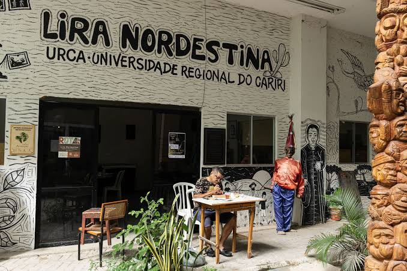
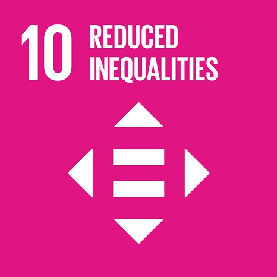
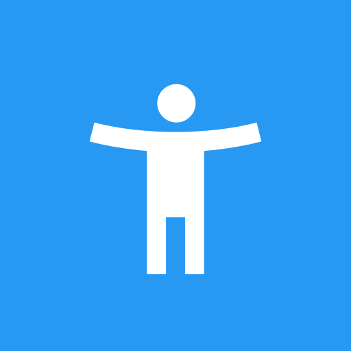

🤖 WRO 2026 · Future Innovators · Elementary
🤖 WRO 2026 · Future Innovators · Elementary
RITMO
"Cada coração, uma história."
A vending machine cultural que usa o ritmo do coração para entregar literatura de cordel.
ALL MIGHT KIDS · Escola SESI SENAI Parangaba · Fortaleza, CE


 🤖 WRO 2026 · Future Innovators · Elementary
🤖 WRO 2026 · Future Innovators · Elementary
"Cada coração, uma história."
A vending machine cultural que usa o ritmo do coração para entregar literatura de cordel.
ALL MIGHT KIDS · Escola SESI SENAI Parangaba · Fortaleza, CE
Referência cultural


A Lira Nordestina, em Juazeiro do Norte, ligada à URCA, foi uma das nossas principais referências de pesquisa. Com prensas originais ainda em funcionamento e acervo vivo de cordéis produzidos artesanalmente, o local confirmou nossa escolha: o folheto físico precisava ser o centro da nossa solução.
"Ver as prensas originais ainda em uso e os folhetos produzidos à mão nos convenceu — o cordel é patrimônio vivo que precisa chegar às novas gerações."
Quem nos ajudou

Conversamos com membros da Academia para validar a nossa proposta cultural — garantindo que o RITMO honra o cordel como patrimônio e conecta tradição com inovação.

Testamos o RITMO com pessoas com deficiência visual. A experiência resultou em instruções em áudio, identificação em Braille nos folhetos e QR Code com narração.
O robô







A equipe

Desenhou a experiência do usuário, liderou a pesquisa de campo com os 180 participantes e desenvolveu a identidade visual do projeto.

Responsável pela programação em Python, integração dos sensores, montagem eletrônica e construção física do RITMO 2.0.
Galeria


"Cada coração, uma história."
